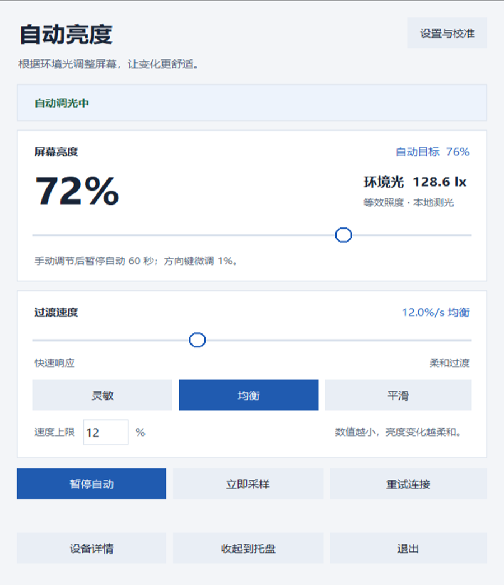

柔和变化
自动亮度以小步过渡，配合平滑与迟滞，减少突然跳变。你可以在设置里调整过渡速度。
用摄像头感知环境光，平滑调节 Windows、Linux 和 macOS 屏幕亮度。
Camera Auto Brightness 通过电脑摄像头感知环境光照，自动调节屏幕亮度。支持手动接管与校准，让日常办公与学习少一次来回调节。
下载 Windows 版 查看源码Windows 10/11 · 64 位 · 解压即用
Linux 与 macOS：选择你的系统 →

拖动体验明暗变化。仅改变网页预览，不会控制你的屏幕。
Windows 便携版使用方法。
获取 Windows 便携版压缩包。
完整解压，保持两个 EXE 在同一文件夹。
start-camab.exe
打开界面，按需校准。
自动亮度以小步过渡，配合平滑与迟滞，减少突然跳变。你可以在设置里调整过渡速度。
拖动软件里的亮度滑块立即调节。默认接管 60 秒，之后恢复自动；也可以暂停或重新校准。
正常运行只在本机分析摄像头画面，不保存或上传图像。无有效画面时保持当前亮度。
Windows 使用 WMI/DDC/CI，Linux 使用背光接口或 ddcutil，Mac 使用 brightness 工具。可在高级设置中选择设备，并根据实际环境校准。
支持 Windows 10/11 x64、Linux x86_64，以及 Mac Apple Silicon/Intel。都需要可用摄像头和可调光显示器。Linux 需设备权限；Mac 普通第三方外屏不保证可调。原生自动测试不等于真实硬件兼容认证。
便携包自带 Python。Linux 仍需系统图形库和亮度工具；Mac 需先安装 brightness。源码方案需要 Python。网站与说明为中英双语，桌面界面和多数命令行提示目前使用中文。
先检查“仅模拟调光”是否开启、自动模式是否暂停，以及手动接管倒计时是否结束。再确认摄像头有有效画面，查看界面设备提示。仓库 README 提供完整自检命令和排查说明。
有可用托盘或菜单栏图标时，关闭窗口会收起并继续运行，可从图标菜单退出。托盘不可用时，最小化按钮保留窗口，关闭窗口则退出。配置与日志保存在各系统的用户配置目录。
v2.2.0 · 四种原生构建
安装与兼容性指南 →Windows 10/11 · 64 位。解压后双击 start-camab.exe。
x86_64 图形桌面。内屏需要背光权限或 brightnessctl；外屏需要 ddcutil 与 I²C 权限。
先安装 brightness，再打开 .app。普通第三方外屏不保证可调；应用未经过 Apple 公证，系统拒绝运行时可选源码方案。